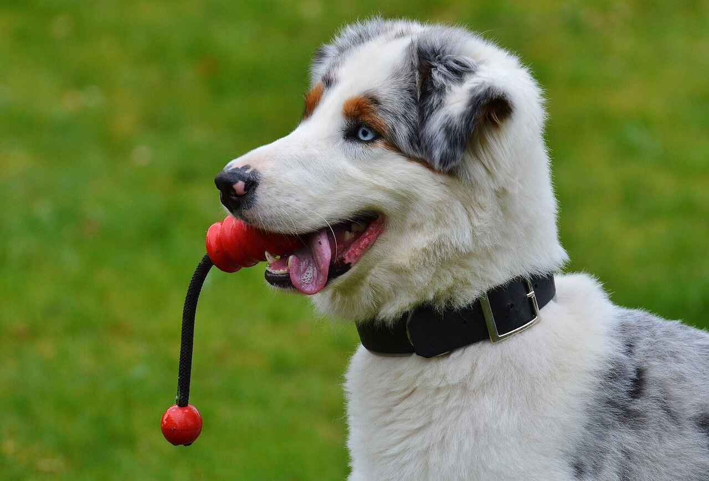

Lua
Samoa • Dog Rescue
Help Samoa’s stray dogs find a safe, loving home.
Discover adoptable dogs, learn how to care for them in Samoa’s climate, and support local rescues through donations and volunteering.

Meet one of our rescue friends waiting for a loving home.
Featured Dogs
A few of the island dogs featured in our project. The Adopt page uses real, live data from the RescueGroups.org API.
Buddy
Sunny
How You Can Help
Adoption is just one way to make a difference. Here are more ways you can support Samoa’s dogs through this site.
Adopt a Dog
Meet available dogs and start the adoption process through local rescues.
Donate to Vet Care
Your contribution helps fund food, vaccines, and medical treatment.
Share & Educate
Teach others about proper dog care in Samoa’s climate.
Volunteer Support
Help rescues with fostering, transport, or donations.